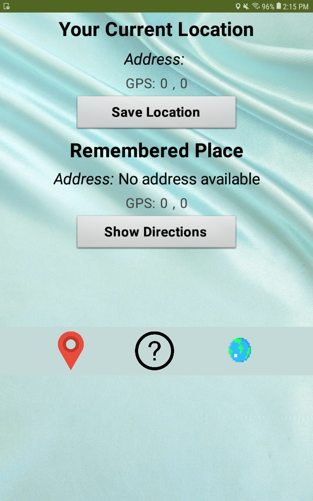

The objective of the Scratch project was to create a game using Scratch. My partner was Oliver Kangwai and we decided on creating a platformer game. We were given tutorials on how to do basic coding and make the character move around. By the end, we had completed making 5 levels, all with their own difficulties. Our character (sprite) was a round ball. I had to make the ball experience real life forces such as: gravity, friction, and momentum. My partner was in charge of making everything look nice and giving us ideas for levels.
The objective of the App Inventor project was to create a GPS based car locater named "Where's My Car?". My partner was Carina Guan and we were given a tutorial on how to make the app, then after we created the basic functionality, we had to improve it by adding nicer backgrounds, better user interface, and also different fonts. There were two screens: one that gives you your current location and also the car's location, and a screen that had a live GPS map like Google Maps. I had to make the functionality part of the code that had to do with latitude, longitude, and storing data. My partner was in charge of making everything look nice and making the app easier to use and read.
